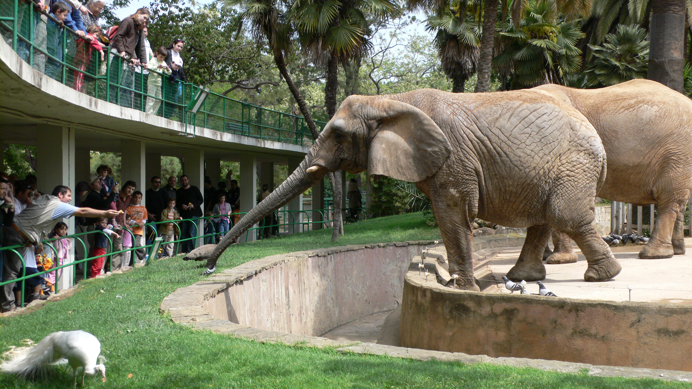
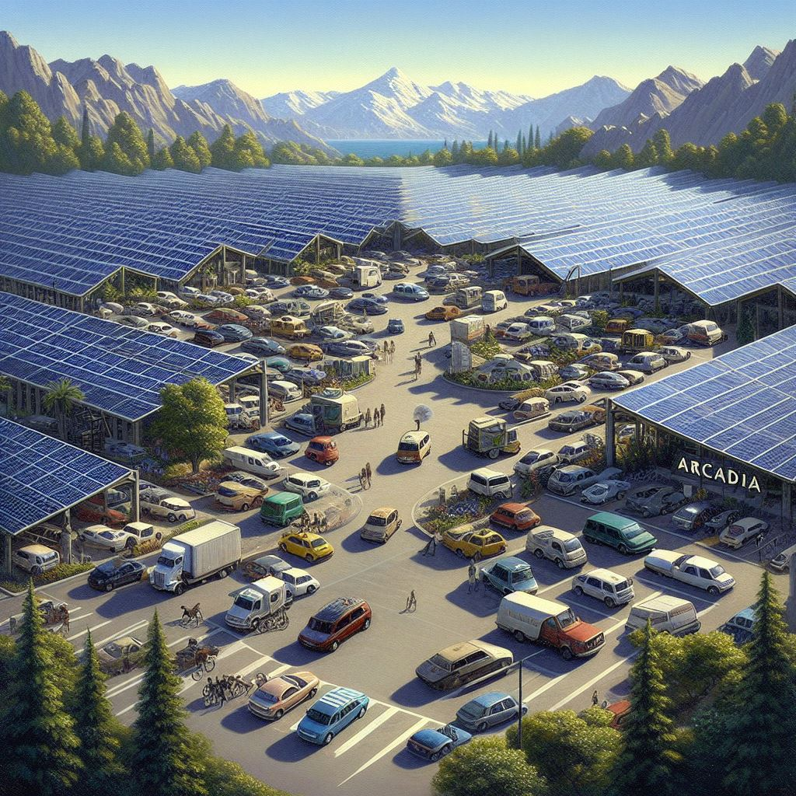

 Fondé en 1995 par l'explorateur passionné de la nature, José Rodriguez, Arcadia offre une immersion unique dans trois habitats distincts : le marais, la savane et la jungle. Depuis son ouverture, ce zoo familial s'engage à sensibiliser à la conservation tout en offrant des expériences captivantes. Aujourd'hui dirigé par la fille de José, Josette Rodriguez, Arcadia continue de perpétuer la vision originale, invitant les visiteurs à découvrir la magie de la vie sauvage.
 Arcadia est bien plus qu'un zoo, c'est un havre écologique. Engagé envers la préservation de la biodiversité, le parc met en avant des habitats soigneusement conçus pour reproduire les écosystèmes naturels. Sa particularité réside dans son engagement envers l'écologie, avec des initiatives innovantes. Arcadia s'autoalimente en énergie grâce à des sources durables, témoignant ainsi de son engagement envers un avenir respectueux de l'environnement. En visitant Arcadia, vous participez à une expérience où la préservation de la nature va de pair avec le plaisir de la découverte.